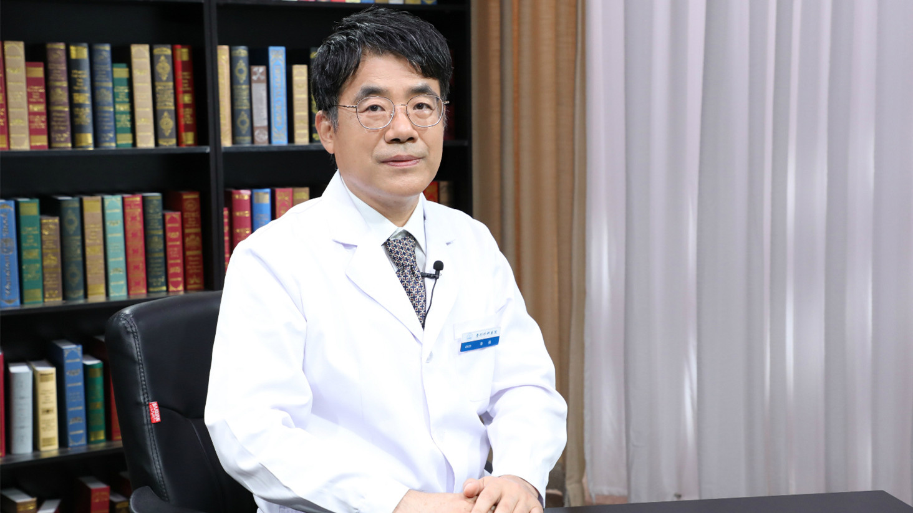

1.99 阴道再造术¶
李强 主任医师¶

中国医学科学院整形外科医院整形十科主任 主任医师 ；
中国整形美容协会女性生殖整复分会常务理事；《中国实用美容整形外科杂志》编委；《中华整形外科杂志》编委。
主要成就： 在国内核心期刊发表论文50余篇，在国外发表SCI文章8篇；曾获得中华医学科技进步奖（三等）；做为副主编参编过《尿道下裂学等》专著，近期做为主编，编写了《妇科美容整形手术》。
专业特长： 擅长妇科整形、男科整形、尿道下裂矫治、两性畸形治疗、瘢痕整形等，对于体表肿瘤、晚期面瘫、微创整形美容和手部整形具有丰富的经验。
先天性无阴道是怎么回事？是平常说的“石女”吗？¶
（采访）先天性的无阴道是怎么回事？是不是人们常说的石女？
是的。通常说的石女就是指先天性无阴道。先天性无阴道是一种比较常见的病，一般来说每5000-10000个女婴，就有一个人可能会出现阴道缺失。
主要发生的机理就是胚胎没能够正常发育。胚胎通常有两个结构组成阴道，上头是Muller氏管，下头是尿生殖窦，这两个往中间长，正常人两个能对合起来就形成了子宫和阴道，如果这两个不能够正常的生长和对接，就导致了先天性无阴道或者是先天性无子宫等畸形表现。
（采访）先天性无阴道有什么样的危害呢？
先天性无阴道首先是不能够生育，第二个是不能够进行正常的性生活。还有如果有子宫，经血不能正常排出。所以对女性的危害还是蛮大的。
（采访）先天性无阴道的患者，一般会伴有始基子宫或者是子宫发育不全。始基子宫指的是什么呢？
始基子宫就是指胚胎期的子宫，没能够按照预定的规律发展成成熟的子宫，而是留在一个比较幼稚的状态，俗称始基子宫，通常是由Muller氏管发育而来。
阴道再造术适合哪些人群？¶
（采访）阴道再造术适合什么样的人群？
阴道再造术主要的适用人群有三大类。
第一大类就是先天性的无阴道、阴道闭锁和阴道狭窄，这是一大类，就是生而不足。
第二大类就是后天性的，又称获得性的阴道缺失、阴道闭锁或者阴道狭窄，这是后天性的一大类。
还有一类就是咱们所谓的变性患者，就是性转变由男转变成女的时候，他需要一个阴道，这时候要进行阴道再造。
（采访）如果对于先天无阴道，但是有子宫的患者，会不会她在青春期的时候就出现月经排不出来这种情况？能够做阴道再造吗？
是可以的，而且是必须的，应该说大约在石女中的10%左右，这些患者在发育过程中，子宫发育还比较好，她有可能有月经，到了青春期以后就会出现经血来潮，但是因为没有阴道，经血排不出去，所以导致周期性的腹痛，每个月都会肚子疼，疼的很厉害，经血排不出来。
这些患者如果不进行治疗，可能导致子宫内膜异位症。对患者将来的治疗非常棘手，所以建议这个时候就要进行阴道成形。
（采访）对于这样子的患者有没有一个年龄限制？
一般来说，当患者出现周期性腹痛，有月经来潮现象的时候，要尽早手术。
先天性无阴道人群哪些情况不适合做阴道再造术？为什么儿童不建议做？¶
（采访）先天性无阴道或者阴道狭窄，阴道闭锁的这种人群，什么样的情况下不能够进行阴道再造呢？
通常来说有这么几个方面的限制。
首先全身性的疾病患者不能耐受手术的时候，这时候是不适合做阴道成形的。
第二有传染病在传染期，这不太合适做。
再一个方面就是性别认知还不是很确定的时候，比如变性病人或者是两性畸形的患者性别认知还不是很确定，还需要患者进一步成长以后才能够确定。
最后一个方面就是年龄限制，这个手术建议需求性生活的人开始进行阴道再造，如果短期内没有性生活的需求，不建议阴道再造，否则再造的阴道有可能长期空置出现萎缩等等现象。
（采访）如果是在儿童时期发现了，这种时候是不是就不能够先进行？
也有做的，曾经有报道在幼儿期有尿生殖窦的异常，可以做别的手术的时候，顺便把阴道做了。但是这种做法，效果不是特别理想。
曾经有一个长期随访的报道，说是在幼儿期做了阴道再造以后，大概有1/3的人，到成人以后还能用，1/3的人经过整形以后还可以用，1/3的人就彻底不能用了，所以说这个时候做阴道成形，不是一个特别好的时机。
阴道再造术前，患者需要做哪些准备？¶
（采访）做阴道再造术之前，患者需要做哪些准备呢？
做阴道再造术之前，首先就是要全身检查，全身检查，包括对患者的身体健康状态，卵巢的情况，患者的局部发育都有所了解，然后才能够考虑是不是做这个手术。
第二个就是要进行妇科的专门检查，对局部的发育，性别的认定，还有患者年龄等等因素都考虑进去，进行全面检查。
然后要进行手术前讨论，手术前讨论包括患者的全身状态，还有妇科体检的一些特征，还有咱们手术医生的技术特点，讨论，然后制定出手术的方案。
然后根据手术方案要求，咱们再进行专门的检查，比如打算用肠道再造阴道，就要对肠道进行专门的检查，打算用皮瓣移植，就要对使用的皮瓣的血运、结构特点进行专门的检查。
（采访）患者需不需要在手术前禁食禁水？
通常来说手术当天是要禁食禁水的。在之前有一个肠道准备，肠道准备的目的，就是为了手术以后少排便。通常手术前3-5天就要用半流食，要吃一些比较好消化的东西，还要用抗菌素做局部的灌肠等等，使肠道保持清洁。
阴道再造术是怎么做的？¶
（采访）阴道再造术具体是怎么做的呢？
阴道再造术是指作为一个女性来说缺少阴道，或者是先天性的因素，或者是后天性的因素，通过人工的方法再造一个阴道，使她能够完成基本的性行为，这个过程称为阴道再造术。
阴道再造术通常有两大类方法，一大类是非手术方法，一大类是手术方法。
非手术方法就是指顶压法，最早是1927年由Frank提出来的，怎么做？就是在阴道腔穴这个位置进行顶压,使劲顶压，逐渐的顶出一个类似阴道的腔穴。这种方法据说90%的人能成功，但是实际上连10%的效果也达不到。最主要的是这个顶压比较痛，很多人坚持不了，顶压一段时间都受不了，到最后就放弃了。而且顶压法还有一个缺点，顶压了以后，老有一种隔膜感，在性生活中感觉到好像是没有一个正常阴道的感受，患者不太满意。
第二类方法实际上就是手术法。手术法阴道再造通常是有两种部分组成：第一个部分就是造穴，第二个部分就是阴道造穴的腔穴上要覆盖上皮组织。阴道造穴最早是1817年由Dupuytrein提出的。他提出在尿道和直肠之间间隙中，也就是正常的阴道间隙中做个造穴，然后进行阴道成形，这种方法一直被现在所沿用，所以说把Dupuytrein阴道再造称作里程碑式的发现或者是发明。
阴道造穴的方法可以直接在里头造穴，也可以注上一些水，所谓的肿胀法来进行造穴。这种方法多种多样，但是基本原理都是按照Dupuytrein的理念进行的。
第二个部分就是隧道里头贴上一层上皮组织，就相当于咱们打隧道了以后还要喷浆，然后用水泥做上一层内里一个道理。目前的阴道成形术的差别往往就是这一层内皮的转移方式不同，而导致的不同。
（采访）阴道再造术衬里的重建都有哪些方式？
衬里的重建目前来说最流行的有四大类。
第一大类就是游离移植，游离移植包括植皮法，口腔黏膜法，还有人工材料，这都属于游离移植，把一个没有血运的组织贴敷到阴道的腔穴上，使它重建血运，这种方法是最简单的，创伤最小的。
第二类方法就是肠管法。肠管法就是把一段回肠、乙状结肠等，带着血管蒂转移过来以后，贴敷到阴道壁里头。
第三类方法就是腹膜法，腹膜法就是盆腔里头的腹膜动员一部分转移到阴道下头来，然后作为阴道的衬里。
第四类方法实际上就是皮瓣法。皮瓣法就是转移一个比较大的皮瓣，然后缝成一个阴道，然后转移过来，好处就是可以提供比较丰富的组织量。但是坏处就是手术比较复杂。
用游离移植法再造阴道，可以移植哪些部位？¶
（采访）阴道再造游离移植法可以移植哪些部位？
阴道再造的游离移植法可以用很多材料，最常用的有这么几种。
一种就是植皮法，植皮法是最成熟的一种方法，是用断层皮在阴道里头贴敷、存活。这种方法用的是最传统的也是最多的，在史密斯妇产科学上作为一种经典方法推荐。
第二种就是咱们的口腔黏膜法。口腔黏膜法最早是2003年由台湾的LinWCtl0来报道的，采用了口腔黏膜片，说是做阴道再造还可以。但是口腔黏膜微粒法最早是由中国的李森凯教授提出来的，这种方法好处就是创伤比较小。
第三类就是咱们用的胎儿皮。因为胎儿皮据他们研究说效果非常好，但是牵扯到伦理问题，基本上没有来源不好做。
还剩下一种方法，就是用人工材料也是现在最流行的。这个方法的最大好处就是用脱细胞人工真皮材料进行阴道成形以后，不用专门的在身体上采取组织，手术创伤非常小，用的比较普及。
（采访）什么情况适合用游离移植法做阴道再造？
如果说对游离移植组织成活，这个方法掌握的比较好，病人希望创伤比较小，就可以采用这种方法。
（采访）游离移植法来做阴道再造，有什么样的优缺点呢？
它的优点就是操作简单，创伤非常小，而且因为游离移植非常薄，感觉比较接近于正常阴道的感觉，所以说这种用的是比较普及的。
但是它的缺点也是比较明显的，第一个缺点就是这个东西移植要成活。植皮或者是口腔黏膜，都有个成活的过程，成活过程要有一定的技术要求。
第二个就是成活的组织，后期会挛缩，挛缩就要有模具来支撑、对抗它。如果模具支撑、对抗不够及时，后期挛缩就比较明显，会影响到阴道成形的效果。所以说这个方法的应用又受到限制。当然有些人对局部的分泌要求比较高的时候，可以用口腔黏膜，当对局部分泌要求不是很高，可以用植皮，整个的方法可以根据技术的组成特点进行选择。
什么情况下适合用腹膜移植法再造阴道？有什么优缺点？¶
（采访）什么情况下可以选用腹膜移植阴道再造法？
腹膜移植阴道再造法最早是1970年左右由Rothman提出来的，实际上当时提出腹膜移植阴道再造法以后，做的人比较少。
真正的推广是2001年左右，深圳市第五人民医院罗湖医院的罗光楠教授，推出罗氏整形，用了比较成熟的技术，做手术以后获得比较好的效果才得以推广。一般来说对腹腔比较熟悉，患者腹膜比较丰富，有一定的腹腔镜操作技术，可以采用。
（采访）腹膜移植法有什么样的特点？
腹膜移植法的特点就是，利用腹膜移植下来，移植到阴道再造的腔穴中去进行阴道成形，好处就是腹膜本身有分泌，可以比较润滑。
再一个就是腹膜本身带有一定的血运，这时候不用重建血运，后期挛缩的轻一些。
再一个就是大家觉得身体上不留明显的痕迹，这都是它的优点。
缺点也是比较明显，首先会骚动腹腔，把腹膜转移以后，对腹腔里头的抗感染腹腔里头的功能可能会有一定的影响。
再一个就是腹膜是一种浆膜，要有一个转变的过程，由浆膜转变成阴道黏膜，实际上要有半年左右的转变过程，转变过程中如果没有足够的护理，比如冲洗，模具支撑等等，有可能自己闭缩，所以说要么就进行早期的性生活，要么就得足够时间支撑，这样防止闭锁。
再有一个也就是最尴尬的地方，就是腹膜转移下来，上面封闭，一般要缝两层，不是很坚强。所以说在性生活过程中，有个别人缝的口有可能再开，导致再造的阴道和腹腔就通起来了，甚至肠管就顺着这个腔穴就可能下来。所以说还是有一定潜在的风险。
肠道法再造阴道有什么优缺点？¶
肠道法实际上是在20世纪初就有人提出来，最早提出来的是回肠再造法，以后用乙状结肠，直肠都有人用，随着技术方法的成熟，用乙状结肠更多一些。
这种方法的好处就是肠道本身跟阴道很相似，直接就是一个圆的，而且有分泌功能。可以截一段肠管过来，接肠子的技术也比较过关，这时候手术相对简单。但是有比较明显的缺点。首先肠子再截一块，肠子还需要一个吻合、愈合过程，如果这个技术不是很过关，有漏的风险，导致肠漏可能是感染，甚至可能引起死亡，这个风险还是存在的。
第二个移植来的肠子虽然带着血管，有个别的血运不太好，导致肠坏死，这段肠子的成活不好，后期挛缩等问题就比较麻烦。
还有一个比较尴尬的问题，就是肠道法再造阴道以后，有些人有一种异味，异常的味道，感觉到有一种大便的味道，有些患者觉得不能够接受，这也是限制使用的一个重要因素。
皮瓣移植再造阴道有什么优缺点？¶
（采访）什么情况下可以选择用皮瓣移植的阴道再造法？
皮瓣移植实际上是整形外科做阴道再造的一个比较传统的方法，最早是在18世纪就有人在用，最早是用小阴唇皮瓣进行阴道成形术，后来又提倡用其他皮瓣进行阴道再造。
皮瓣法阴道再造的好处就是可以采用一个带有血供的组织瓣进行阴道成形，不需要一个阴道血运重建的过程，后期挛缩比较轻，还可以提供非常丰厚的组织。
但是它的坏处就是组织创伤比较大，身上留比较大的疤。再一个就是皮瓣是带着血供的，血管如果受到危害，可能导致皮瓣部分坏死，或者甚至完全坏死，对咱们手术的效果是有影响的。所以说皮瓣法目前大多用在肿瘤切除以后，局部需要大量组织充填的时候进行。
（采访）皮瓣是什么呢？
皮瓣就是指带有一定血供的皮肤和皮下组织共同构成的一个血供单元，称作皮瓣。
（采访）它的形状是什么样？
什么形状的都有，根据设计来定，主要是指有一定的血供来供应的一个组织单位，包括皮肤、皮下组织等等，主要是构成一个独立的血供单位称作皮瓣，形状是根据您的需求来进行设计的。
阴道再造术是局麻还是全麻？需要多长时间？¶
（采访）做阴道再造的手术是要全麻还是局麻？
这个手术一般是要全麻做，因为牵扯到多个手术部位，同时操作。
（采访）做一台这样的手术大概多长时间？
根据手术的方法不一样，手术的技巧不一样，相差很远，最快的半个小时就能搞定一个，最慢的可能要十几个小时，比如要吻合血管，就要很长。如果说是用人工材料，造一个穴，人工材料缝一个塞进去就好了，半个小时就行；或者是用腹腔镜做腹膜也是非常快的。
（采访）如果想做阴道再造术，一般可以去什么样的科室？
做阴道再造术通常是由两种科室来解决，第一个科室就是咱们整形科，专门搞妇科整形的可以做手术。第二个是到妇产科，妇产科里头也有一些人，专门从事阴道成形的手术。
阴道再造术术后会引起哪些并发症？该怎么办？¶
（采访）做了阴道再造术之后，有没有可能有哪些并发症？
阴道再造术后，根据手术方法不同，各有各的并发症，但是还有一些共同的并发症。共同并发症：比如出血、感染、坏死，以及咱们常见的阴道狭窄、变浅、阴道闭锁，还有阴道外口形态不良等等。
（采访）如果出现了这些并发症，该怎么办？
通常来说如果有出血就要充分的止血，想办法充分引流，充分止血，这个是属于一个急症，早期止血有利于伤口的愈合，也有利于手术的成功。
如果出现感染坏死，就得抗感染、换药。咱们用抗菌素局部换药等等，把局部的坏死组织，清理掉，争取再重新进行阴道成形，或者是把创面清洁以后，再采用其他方法补救也是可以的。
至于说阴道狭窄变浅或者阴道闭锁等问题，最主要的原因是阴道内壁组织挛缩导致的，所以说抗挛缩是预防的一个最重要的措施，抗挛缩的方法最有效的就是模具支撑。可以这么说，所有的阴道成形术都需要模具支撑，只不过差别在于模具支撑需要的时间长短不同，有的可能需要几个月，有的可能需要一两年。
（采访）如果做了阴道再造术，过了一段时间之后，阴道挛缩的非常严重怎么办？可不可以再一次手术呢？
这是一个比较头疼的问题，是可以的，如果阴道完全闭锁，那就只能是再造。
咱们最常见的就是过去用的羊膜法，羊膜法也属于游离移植阴道成形术的一种。如果不能够按期佩戴模具，到最后完全挛缩没了，也是完全可能的。有一些是挛缩了以后变浅，而且变窄。这时候还可以借用咱们的非手术手段，比如顶压，模具顶压，实现阴道的正常大小。
（采访）做了阴道再造术之后，患者需不需要吃一些药或者用一些药？
一般来说，做了阴道成形手术以后，需要用一些抗菌素控制感染，还要用一些止疼药，减少患者术后的疼痛。
阴道再造术后引流管多久可以拔除？多久可以出院？¶
（采访）做阴道再造术需不需要给患者接引流管？
是的，如果是用皮瓣法，或者是用肠管法，都需要接引流管，手术方法需要把组织间隙中的渗出液或者是血液给引流出来。但是有一些方法可能就不需要，比如咱们用口腔黏膜微粒法、植皮法，可能就不需要。
（采访）如果需要放引流管的，多久可以拔除？
一般放引流管，要求是72小时之内都要拔除。
（采访）做阴道再造术，患者一般要住院多长时间？
根据手术方法的不同，有所差别，一般来说要住7-10天，要用口腔黏膜，建议2周左右。
（采访）一般7-10天或者2周左右，恢复的情况差不多了？
初步恢复以后，病情稳定了，才建议病人出院。
（采访）阴道再造术术后应该多久回医院复查？
各种的术式有不同的要求，比如口腔黏膜做了阴道移植以后，通常来说，术后一个月、三个月、六个月、十二个月都要回来复查的。
（采访）如果一年以上还需要回来复查吗？
是这样的，一年以上也建议，过上一两年患者就回来看一看，主要的目的就是如果有问题再指导她下一步怎么应对。
（采访）使用其他术式的患者应该多久来复查？
其他术式也有相关的规定，一般的三个月、六个月都需要来复查。
阴道再造术后伤口怎么护理？饮食上需要注意什么？¶
（采访）做了阴道再造术之后，患者怎么样来保证伤口的清洁呢？
早期来说只能是换药，及时的换药。但是要做游离移植，换药又不能太早，如果太早，有可能导致游离移植的成活困难，这时候一般7-10天才开始进行换药。其他的那些皮瓣法，这些要早期换药，保持局部清洁。到了后期就是7-10天以后可以局部清洗来实现它的清洁。
（采访）做完阴道再造术之后，患者小便会不会影响到伤口？
会影响到，所以通常要进行尿转流就是插导尿管，这时候尿液能够顺着导尿管流出来，免得尿液污染伤口。
（采访）导尿管是不是也要插7-10天？
是的，通常来说在没有游离组织成活之前，或者是没有保证皮瓣成活之前，都要插着导尿管，防止尿液污染伤口。
（采访）阴道再造术之后，在饮食上面有没有需要注意的？
通常来说，阴道再造术后7天左右都是要禁食的，或者是无渣流食，或者是限制大便，总体来说不希望手术后7天以内有大便排出，这样咱们就可以把换药时间后移，保证转移的组织成活。
阴道再造术后需要戴模具吗？戴多长时间？¶
（采访）您提到阴道再造术后，根据不同的术式可能要佩戴不同的模具，一般在术后多长时间开始用模具？
手术方法不一样，应用模具的时段不太一样，但是通常手术以后，先是进行换药，换药一结束就要应用模具，这是应用模具的最早时限，至于什么时候结束，根据方法不同是有差别的，像皮瓣法、肠管法挛缩的比较轻，可能几个月就不用了，但是对于游离移植法可能挛缩的比较重，对模具的依赖就比较强一些，可能半年甚至一年都要应用。
（采访）模具需要佩戴多久是一天24小时吗？
早期佩戴可能是建议24小时应用，到了两三个月以后可以逐渐的脱离，如果能够耐受一天拿出半天来用，或者是再长一点，或者隔几天用一次，都有可能。
如果这个患者做了阴道成形以后，长期没有性生活，哪怕是一两年以后，还要定期的佩戴一段时间模具，防止再造的阴道挛缩、变窄，不能应用。
（采访）您提到会对模具产生依赖，这个是什么意思？
是这样的，有一些手术方法，手术以后可能会导致局部的衬里的挛缩。这个挛缩是一个很漫长的过程，在漫长的对抗挛缩中是需要模具的，称作模具依赖。就是在这个过程中，如果不用模具，（再造的阴道）有可能变窄变浅，不利于再造阴道的形状保持。有些甚至很长时间以后没有性生活，还需要定期的放入模具。
（采访）阴道再造术之后，如果有性生活了，是不是就可以不用再用模具？
一般来说，早期对阴道模具的应用是可以减少，后期就可以完全脱离。像腹膜法用了以后，只要性生活逐渐的能够规则起来，可以不用模具。
但是有些方法像口腔黏膜微粒法、植皮法。如果单纯的性生活，因为不可能有很高的频度，所以说模具支撑还是有一定的价值。等到一定时间以后，局部完全成熟了，挛缩的趋势减小了，这时候就可以不需要模具了。
阴道再造术，术后多久可以进行性生活？¶
（采访）一般建议做了阴道再造术的患者，多久之后再进行性生活呢？
一般的建议适当早一些，一般来说3-6个月就可以考虑性生活，根据各种方法的不同，有的人规定再长一点，有的人规定再短一些，通常来说，半年都可以进行性生活。
（采访）对于做了阴道再造术的女性，在进行性生活的时候会有感觉吗？
一般采用的方法多少都是有一些感觉的，像游离移植，是有肠道的本体感觉刺激。像皮瓣也有一定的感觉，像肠管和腹膜法多少也是有一些感觉的。
为什么阴道再造术后戴模具很重要？¶
（采访）进行了阴道再造术术后有什么特别需要注意的事情？
手术以后最关键的就是防止阴道的挛缩。这实际上是所有阴道再造手术以后共同面临的一个问题，就是不论什么方法，都有可能出现挛缩甚至闭锁。所以手术以后佩戴模具是非常重要的一个保险措施，可以保证手术的效果持久。
（采访）患者一定要注意。
一定的时间内来佩戴模具，至少是在规则性生活之前。对模具要适当的佩戴。
（采访）对于青春期的女性，做了阴道再造术之后也要佩戴模具？
这个时候就是更重要的一个问题了。因为对于青春期的女孩来说，她做了阴道成形术，为了经血排出，这时候她没有性生活，这时候不论用什么方法做了阴道成形，都有可能导致局部阴道的狭窄。所以说适当的佩戴模具，适当的应用一段时间模具，对于防止阴道挛缩有很重要的作用。